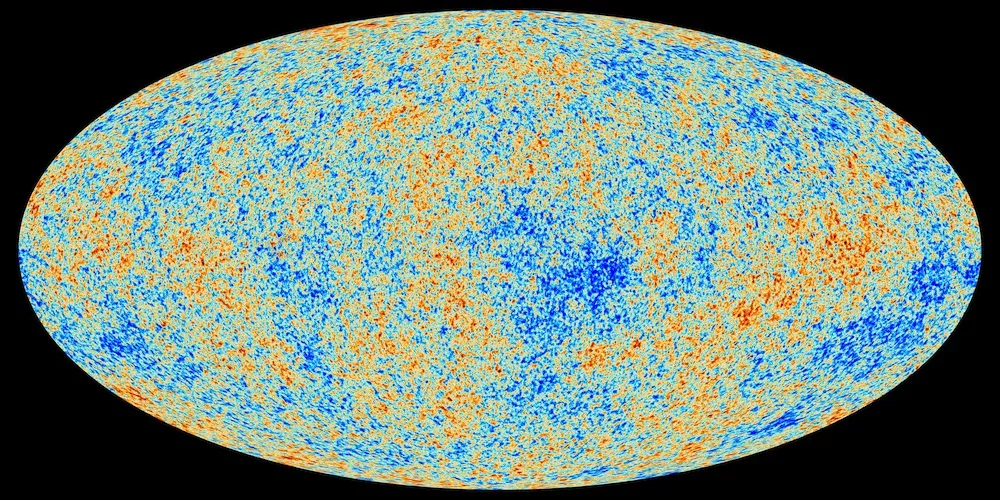
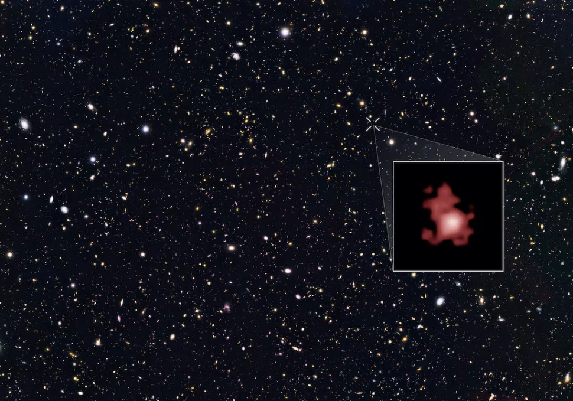
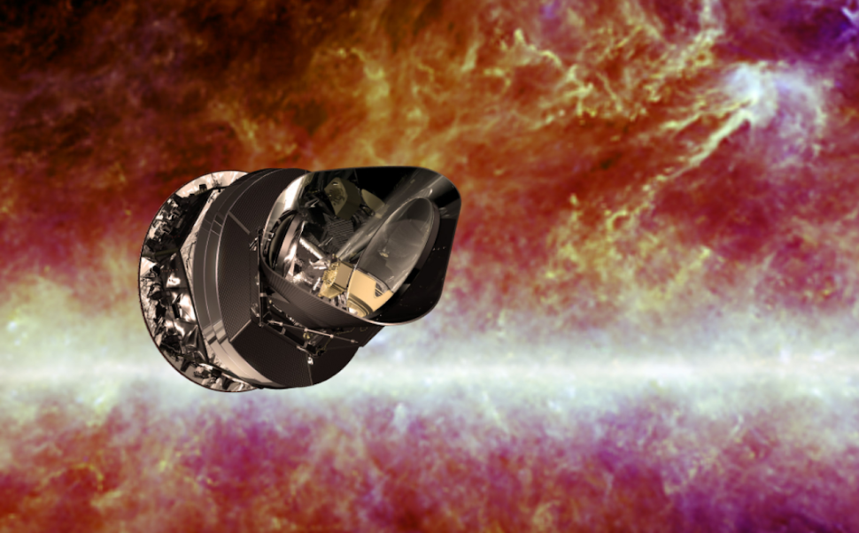

What was the Big Bang?
The Big Bang Theory is the leading explanation for how the universe began. Simply put, it says the universe as we know it started with an infinitely hot and dense single point that inflated and stretched — first at unimaginable speeds, and then at a more measurable rate — over the next 13.8 billion years to the still-expanding cosmos that we know today.
Existing technology doesn't yet allow astronomers to literally peer back at the universe's birth, much of what we understand about the Big Bang comes from mathematical formulas and models. Astronomers can, however, see the "echo" of the expansion through a phenomenon known as the cosmic microwave background. While the majority of the astronomical community accepts the theory, there are some theorists who have alternative explanations besides the Big Bang — such as eternal inflation or an oscillating universe.

THE BIG BANG: THE BIRTH OF THE UNIVERSE
Around 13.7 billion years ago, everything in the entire universe was condensed in an infinitesimally small singularity, a point of infinite denseness and heat. Suddenly, an explosive expansion began, ballooning our universe outwards faster than the speed of light. This was a period of cosmic inflation that lasted mere fractions of a second — about 10^-32 of a second, according to physicist Alan Guth’s 1980 theory that changed the way we think about the Big Bang forever. When cosmic inflation came to a sudden and still-mysterious end, the more classic descriptions of the Big Bang took hold. A flood of matter and radiation, known as “reheating,” began populating our universe with the stuff we know today: particles, atoms, the stuff that would become stars and galaxies and so on.

This all happened within just the first second after the universe began, when the temperature of everything was still insanely hot, at about 10 billion degrees Fahrenheit (5.5 billion Celsius), according to NASA(opens in new tab). The cosmos now contained a vast array of fundamental particles such as neutrons, electrons and protons — the raw materials that would become the building blocks for everything that exists today. This early "soup" would have been impossible to actually see because it couldn't hold visible light. "The free electrons would have caused light (photons) to scatter the way sunlight scatters from the water droplets in clouds," NASA stated. Over time, however, these free electrons met up with nuclei and created neutral atoms, or atoms with equal positive and negative electric charges. This allowed light to finally shine through, about 380,000 years after the Big Bang. Sometimes called the "afterglow" of the Big Bang, this light is more properly known as the cosmic microwave background (CMB). It was first predicted by Ralph Alpher and other scientists in 1948 but was found only by accident almost 20 years later. This accidental discovery happened when Arno Penzias and Robert Wilson, both of Bell Telephone Laboratories in New Jersey, were building a radio receiver in 1965 and picked up higher-than-expected temperatures, according to NASA(opens in new tab). At first, they thought the anomaly was due to pigeons trying to roost inside the antenna and their waste, but they cleaned up the mess and killed the pigeons(opens in new tab) and the anomaly persisted. Simultaneously, a Princeton University team led by Robert Dicke was trying to find evidence of the CMB and realized that Penzias and Wilson had stumbled upon it with their strange observations. The two groups each published papers in the Astrophysical Journal in 1965.
RECONSTRUCTING THE UNIVERSE'S INFANCY
Because we can't see it directly, scientists have been trying to figure out how to "see" the Big Bang through other measures. In one case, cosmologists are pressing rewind(opens in new tab) to reach the first instant after the Big Bang by simulating 4,000 versions of the current universe on a massive supercomputer. "We are trying to do something like guessing a baby photo of our universe from the latest picture," study leader Masato Shirasaki, a cosmologist at the National Astronomical Observatory of Japan (NAOJ), wrote in an email to Live Science. With what is known about the universe today, the researchers on this 2021 study compared their understanding of how gravitational forces interacted in the primordial universe with their thousands of computer-modeled universes. If they could predict the starting conditions of their virtual universes, they hoped to be able to accurately predict what our own universe may have looked like back at the beginning. Other researchers have chosen different paths to interrogate our universe's beginnings.
In a 2020 study, researchers did so by investigating the split between matter and antimatter. In the study, not yet peer-reviewed, they proposed that the imbalance in the amount of matter and antimatter in the universe is related to the universe's vast quantities of dark matter, an unknown substance that exerts influence over gravity and yet doesn't interact with light. They suggested that in the crucial moments immediately after the Big Bang, the universe may have been pushed to make more matter than its inverse, antimatter, which then could have led to the formation of dark matter.
THE AGE OF THE UNIVERSE
The CMB has been observed by many researchers now and with many spacecraft missions. One of the most famous space-faring missions to do so was NASA's Cosmic Background Explorer (COBE) satellite, which mapped the sky in the 1990s. Several other missions have followed in COBE's footsteps, such as the BOOMERanG experiment (Balloon Observations of Millimetric Extragalactic Radiation and Geophysics), NASA's Wilkinson Microwave Anisotropy Probe (WMAP) and the European Space Agency's Planck satellite. Planck's observations, first released in 2013, mapped the CMB in unprecedented detail and revealed that the universe was older than previously thought: 13.82 billion years old, rather than 13.7 billion years old. The research observatory's mission is ongoing and new maps of the CMB are released periodically. The maps give rise to new mysteries, however, such as why the Southern Hemisphere appears slightly redder (warmer) than the Northern Hemisphere. The Big Bang Theory says that the CMB would be mostly the same, no matter where you look. Examining the CMB also gives astronomers clues as to the composition of the universe. Researchers think most of the cosmos is made up of matter and energy that cannot be "sensed" with our conventional instruments, leading to the names "dark matter" and "dark energy(opens in new tab)." It is thought that only 5% of the universe is made up of matter such as planets, stars and galaxies.
